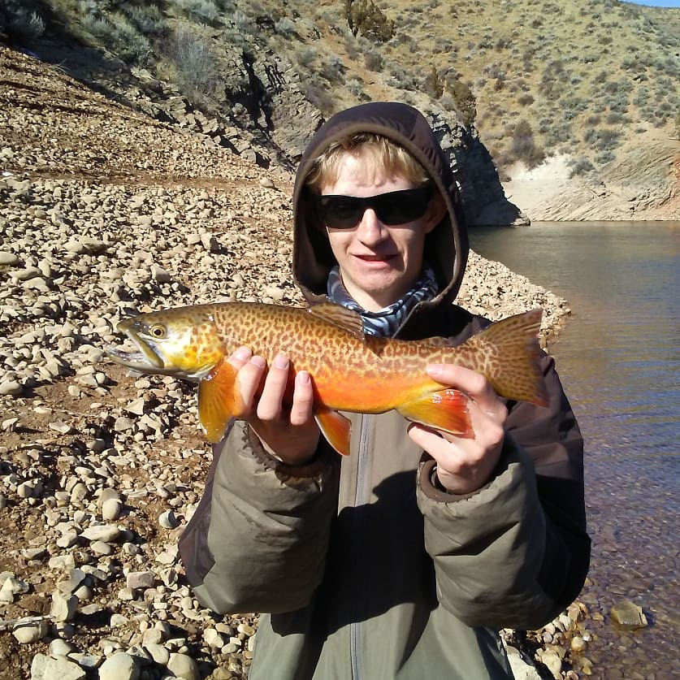

Welcome to the tips and tricks page. On this page you will find some of my favorite tube jig fishing methods with an explanation on how to use these certain methods. At the end of all the methods I will rank all methods from most effective to least effective based on my own opinion. There are many reasons as to why using tube jigs should be one of your go to options. But probably the biggest reason is because there is a lot of people who don't use tube jigs when fishing. You will commonly find this at community fisheries where bait fishing and spinners are the primary fishing methods. Because of this using tube jigs can be the best option because the fish in these sometimes heavily fished areas are probably a little more tentative so, the use of an uncommon lure could be just the right thing to get them to bite.
When bottom bouncing while casting, one thing to keep in mind is that it is probably one of the most difficult methods. This is not because the method itself is hard to use. It's because it sometimes requires a delay before the hookset. This means that you will know that the fish is biting, but you have to wait to set the hook. This is to allow the fish to eat the jig enough so that the hook gets in its mouth. So all in all, the biggest thing to keep in mind is that even though this is a very effective method, especially for Trout, as a beginner you might miss a lot of fish at first, but once you get the timing down you might just be able to catch fish on most of your casts.
If you plan to bottom bounce while casting, you will be able to do it from either the shore or a boat. After you cast your jig you are going to want to let the jig sink to the bottom. After it hits the bottom, I recommend that you let the jig just sit there for 5 to 10 seconds. The reason for this is because if any fish saw it sinking down they might just hit it right away. If you don't get a hit after about 5 to 10 seconds, then you will want to reel up some of the slack then perform a vertical jig with your rod and reel down (the motion will be similar to the jigging motion in the Cast and Jig Retrieve section, just slower). After you have completed the jigging and reeling down motion, you will want to wait for your jig to hit the bottom again. You will know this has happened when your line appears to slack off. At this time, you are going to want to wait about a second or two to see if you get a bite. You will know if you get a bite because the slacked off line will begin to pull out or tighten up. Just remember to not set the hook right away because the fish might just bite and drop the jig really quick. You also want to wait for the fish to pull out as much of the slack as possible so that you will get a better hook set. If the fish does just bite it and drop it before you set the hook then just wait another second or two and if the fish doesn't hit again perform another jig and reel down motion. This will give the imitation that the jig is trying to get away, so if there is an interested fish then it may cause them bite. There may also be times where you don't even know that the fish has hit. This is actually the best type of hit for this method because you are unaware that the fish is biting. The only downside about this is that you are going to need to have pretty fast reflexes when you go into your next jig. If this happens, the second you feel the fish (you will know this because of unusual weight when you jig) you must set the hook because if you are to slow the fish will drop the jig.
Bottom bouncing while jigging vertically is much easier then while casting. This is because you don't have to really wait for fish to pull slack out of the line before you set the hook. What will commonly happen is after you perform a jig off and back down to the bottom, the fish will just grab it and on your next jig you will feel the fish. At this time just set the hook and it should be game on. You will however, still need to have pretty fast reflexes, so the fish doesn’t have time to drop the jig.
This method doesn't require you to do as much stuff as other methods, but it because it is similar to the bottom bouncing while casting method. It may be a little hard to do at first. What you want to do is cast your tube jig out and let it sink to the bottom. Then all you have to do is wait for a fish to come by and pick it up. The only problem with this is that there has to be a lot of fish in the area in order for it to work effectively. Luckily, there are ways to sometimes figure out if the fish are congregated in a small area. The first way to do this is to just blindly cast all over the place until you find what you think is to be where all the fish are. However, this is probably the worst method if you are fishing a large area. The second way is to use the bottom bouncing while casting method. This will sometimes tell you where the fish are based on where in your cast your getting hit. If you are constantly get hit at a similar distance every cast then it is likely that there are quite a few fish in that area, so using this method at that point would be a very effective method. A third method you could use if you are dealing with smaller fish is to bottom bounce a slightly large jig. This works because it will be easier for the fish to see, and sometimes the fish will hit the bigger jig even though they can't really fully eat it. Once you find an area that you are getting hit a lot with the larger jig then it is best to cast a smaller jig into that same area, so that the smaller fish can fully eat it.
When it comes to the hit, it will be similar to the bottom bouncing hit where the line slowly begins to pull out or tighten. All you have to do is wait for the fish to pull out almost all the slack before setting the hook. The other thing to remember is that unlike bottom fishing where you are letting the bait sit on the bottom for 10 to 20 minutes. With the jig, if you don't get a hit within a minute or two then reel it in and cast again. If you are using a smaller jig then using the slow retrieve method (see slow retrieve section below) because the fish may still bite it as you are reeling it in because they think the jig is getting away.
The cast and jig retrieve is in my opinion the best method to use when fishing deep areas of lakes that have larger fish. It is not the most effective option at community fisheries where the water is usually shallower and the fish are smaller. Because this method is so complex and slightly hard to explain clearly in words, there is a video at the end of this methods section to give a visual idea of most of what is about to be explained. This method also requires you to have some pretty fast reflexes most of the time, and will also require some patients as you will sometimes see the fish hit the jig. While this method my seem like a lot to take in at the start, if you use it and practice it will up your numbers massively when fishing at lakes.
To begin this method, start by casting your tube jig out as far as you can, and then just leave your bail open to let the tube jig sink to where you see the fish coming through on your fish finder. Now this may be hard to judge at the start, but once you catch a few fish your brain will subconsciously know how long you need to let your jig sink. Once you think you are down in the range the fish are at reel up any slack in your line, and then do a somewhat hard vertical jig, then reel down and repeat. Do this through the whole cast. At some point you will go to jig, and there will be a major weight difference, it is at this point that you set the hook, but remember to react fast because the fish will drop the jig if you are not fast enough. If you ever hook and miss, which you will, just lower your rod without reeling to let the jig sink. While doing this if you ever see your line slack off, you will know this has happened because the tension in your line will suddenly be lost, and you know you are not hitting the bottom reel up the slack and set the hook because what will happen is, the fish will most of the time grab the jig while it is sinking which is what will cause your line to slack off. If the fish doesn't hit again after a few seconds of sinking continue the jigging process.
Once your jig has come back into view, this usually only works in clear water lakes, stop jigging and let the jig sink for a few seconds. The reason for this is because the fish will usually follow the jig all the way in and then hit it, but you might not see the fish when they hit it even though you can see your jig. This is due to the fact that some fish can sometimes blend in with the water making it hard to see them. To tell if a fish has hit, just watch the jig to see if it makes an unusual movement rather than just straight down, or if you see some of the jig disappear. If this happens don't set the hook right away, instead give it a second or two, and then set the hook to ensure that the fish has actually had a chance to eat the jig a little. If you do see the fish hit the jig, again don't set the hook right away, just wait a second or two then set. Now, it is very easy to tell if the fish has eaten your jig enough if you can see them hit it. If you see that they have the whole back half of the jig this means they have the hook in their mouths, so set the hook. If they just grab the head then they don't have the hook in their mouth, but sometimes if you wait, they will quickly readjust there bit, and get the hook. But if this never happens it is still a good idea to rip the jig out of the fish mouth to make the fish think the jig is trying to escape. If you do this most of the time the fish will circle back around, and hit again. If at any time you hook a fish reel it in a little but then loose it, don't give up. Sometimes the fish even though they were hooked will still come back and continue to bit your jig. To prove that this can actually happen I have provided a video at the end of this method showing this happening along with the video showing how to do the vertical jig.
The slowly retrieving method is probably one of the easiest methods when fishing tube jigs. This method works best when fishing shallow dirty water that has smaller fish. This also means that this is probably one of the best methods to use at community fisheries along with the bottom bouncing while casting method. Because this method is best when using small tube jigs for small fish, a light action rod is best. This is because the lighter action of the rod will give a better chance of hooking the fish whereas a medium to heavy action rod might rip the jig out of the fish’s mouth.
To start this method, you are going to want to cast out as far as you can. Then you want to begin a slow retrieve back, and wait for a fish to strike. If you are fishing relatively shallow water then it is best that you don't let the jig sink too much after you cast. However, if you are fishing slightly deeper water then it could be a good idea to let the jig sink for a second or two after casting if the fish are not right on the surface. The reason letting the jig sink for a second or two is possibly a good idea is because your jig may land near a fish without you knowing, and if that fish sees the jig sinking then it might come and grab it right away making your job very easy. When it comes to determining how slow you should reel, depends on the situation. Sometimes the fish will want the jig moving very slow whereas other times they might want it moving a little faster, so you may just have to try a few different speeds until you figure out the correct speed. While figuring out the correct speed might sound tough, it's really not. After you catch a couple fish your mind will begin to figure out just how fast you have to reel.
Of all the methods listed on this page, this is probably the one I use the least, and probably the least effective. However, this does not mean that it is a worthless method because there are times where it works. It’s just that those times are not often. This method will most likely work best in the fall when the fish are more active. This is pretty much a method that can replace spinners and spoons if you don't have any or are just a die-hard jig fisherman. I would also strongly recommend that you only use this method in clear water due to the fact that it is harder for the fish to see a jig moving fast unlike a spinner or spoon.
To do this method you are pretty much going to follow the same procedures you would follow when fishing with a spinner or spoon. Simply cast the jig out as far as you can and reel it back at about the same speed you would when fishing a spinner or spoon. The only thing that is going to be different between the jig and spinner is that when you get a hit you are going to want to stop reeling and let the jig fall for a few seconds, unlike a spinner where you would just keep reeling. The reason you want to stop reeling and let the jig sink is because first unlike the spinner the hook is not right on the back of the jig, so if the fish just swipes at it you will likely not hook them right away, whereas with a spinner you would. Because of this chance of missing the fish, if you let the jig sink it will make the fish believe that it has wounded the jig making them think that they now have a very easy meal to take down. However, if this doesn't happen after a few seconds then simply just continue reeling.
The vertically jigging method works best at lakes that have slightly larger fish in it. It also is best to use at lakes because that is where you can launch a boat unlike most community fisheries. Another think to keep in mind is that if you are at a lake where the casting and jigging method work then this is a very good method to have on standby if the fish are not after the casting and jigging method. Of all methods on this page this is the one that is going to require you have a fish finder of some sort, but it is strongly recommended that you have a finder that allows you to see your jig and fish's movement pretty much in real time. This is because based on how the fish reacts to your jig will determine how you should work the jig.
When vertically jigging from a boat, you will likely be fishing deeper water for larger fish so it is very likely that you will be using larger tube jigs. At first you are going to want to drop your jig down to the depth that the fish are coming through at or where you expect them to come through at. You will be able to figure this out by looking at you fish finder. When a fish comes and shows interest in your jig, there is going to be a few things that you are going to want to look for so you can have the best chance at getting the fish to strike. Now, the first 2 methods that are talked about you are not going to be able to preemptively tell which one to use. Simply you are just going to have to use trial and error and make your best guess based on which has worked the best throughout the day.
The most common thing that will happen is the fish will come up to your jig and as you jig your jig the fish will begin to follow it up and down. If this happens while you are making large fast jigs then it is probably the best thing that could happen. What you want to do is make 3 large jigs, and if the fish follows it up and down on every single jig, then after the third jig dead stick your jig (stop jigging). If the fish is fired up enough, then after a few seconds it will likely hit the jig. However, it the fish hits and you miss, then let the jig re-sink and dead stick it again. In all likelihood the fish will hit again after another few seconds. But sometimes if you miss and go to let your jig sink, but it appears that it is not sinking, you will know this because there will just be slack in your line, this means that the fish has grabbed the jig before it could fully sink. At this time reel up the slack and set the hook.
The next most common thing is where the fish will come up to your jig, but not want you to move it very much if at all. If this happens it is best to just dead stick your jig and wait to see if the fish bites. However, if this doesn't happen but the fish is still interested, then a good thing to try is slowly lifting or reeling your jig up. This will usually cause the fish to follow your jig, which you should be able to see on your fish finder. More often than not after a few feet of lifting you will begin to feel unusual weight. This means that the fish has grabbed the jig so set the hook. If you do plan on using this slowly lifting tactic I would recommend that you slowly reel up instead of just lifting your rod. The reason for this is because the fish is not always going to hit after a few feet of lifting. Sometimes it takes 10 to 15 feet of lifting before the fish bites. Because of this, if you are slowly lifting your rod up you will eventually run out of room to lift and set the hook, so it is just best to not take the chance and just slowly reel up.
The next thing is not actually only a hit. It is another way to vertically jig. More specifically when it is windy. There are times where it can get to windy to be able to straight vertical jig or cast and jig. So, the next best thing is very lightly cast your jig off the side of the boat where your back is to the wind. Basically, the jig should eventually end up going under the boat and to the other side. In order to do this is best you are going to want to be right at the front or back of the boat, so you can easily change sides after the jig has drifted under the boat. Please remember that if you are at the back of the boat and you’re out drive is still down, to make sure that your line doesn't get stuck in it. But before you begin to move to the other side, you are going to want to fully drop your jig down to where the fish are coming through on your fish finder. If you cast far enough off the side of the boat and get it to sink fast enough, you will be able to see your jig dropping for a few seconds. This is will let you know when are in the right area. However, if you don't see the jig fall then make your best guess, and then on the next run adjust either your cast or make sure that your jig sinks as fast as it can. If there are fish on the finder when you are dropping then the odds of you hooking a fish within a few seconds are very high. The only thing to remember is that if the fish begins to come after you jig as it is falling is to let the jig fall just past the fish before you close the bail. This for some reason really pisses the fish off and almost always causes them to hit right away. However, before you can set the hook you must get your rod and line around the front or back of the boat before you can set the hook. Most of the time if you are still on the side that you dropped off of and the fish hits, you will likely not even know until you get to the other side where the line will be really slacked or after a few seconds of drifting you will begin to feel the fish's weight. It is at this time that you set the hook. If you miss, just simply let the jig re-sink and continue to drift and usually the fish will come back and hit again.
If you drop down and the fish either don't hit right away or there was no fish on the finder at the time you dropped down. Then just get around to the other side of the boat and let the jig drift for a few minutes. Most of the time if there are fish in the area you will get hit within those few minutes. This is because of the fact that the boat is drifting, so the jig is continuing to cover water even after you dropped it down. If you don't get hit after a few minutes, let out some more line to get your jig back down a ways because as you were letting it drift the jig was slowly coming up in the water column. So, by letting out more line you are getting the jig back in the zone that the fish are most likely in. After you have let out more line, wait a few seconds for the drift to pull out the slack in the line, sometimes at this point you will get hit because the fish saw the jig sinking, but if this doesn't happen then begin to bring the jig back using the cast and jig retrieve. This will usually cause fish to chase the jig up ultimately getting you a possible bite and fish caught.
One thing to keep in mind is that this method really only works well if there is a lot of fish in the area the you are drifting through. So, before using this method I would watch your fish finder to see if there is fish coming through at a fairly consistent rate. If you see this happening then begin to use this method and fish all of the sudden are not coming through and you aren't getting bites. Then the best thing to do is move back to the area that you began to see the fish come through at. This is also why it is good to have a fish finder that has built-in GPS, so you can see your drift line and easily get back to where the fish were.
When vertically jigging through the ice there are some new methods that you will likely have to use, but the 3 jigs and dead stick along with the just straight dead stick methods from the boat section will also apply to ice fishing as well. The first new method is what I like to call quick reeling. What you want to do is when a fish comes in on your lure and you jig it and they follow it you can use the 3 jigs and dead stick method or you can make a really quick half or full turn of your reel. This will sometimes cause the fish to chase after your jig which is almost guaranteed to cause a bite. However, it's not always as easy as just one quick reel. Sometimes you need to really fire the fish up in order to get them to strike. To do this, watch you jig and the fish on your fish finder and when the fish is about to catch up to your lure give it another quick reel. At this time you might see the fish's reading speed up as it moves up through the water. If this happens get ready because the fish will likely hit right away.
If a fish comes in and you try either the 3 jigs and dead stick method or the quick reeling method and the fish is just not hitting, and you have tried dead sticking but the fish still won't hit. Then it is best to try very light jigging. Basically, all you have to do is very lightly shake your rod, and sometimes at some point when you are shaking the rod, you will feel unusual weight this means that the fish has grabbed the jig, so set the hook. The only problem with this is that you are going to have to be very quick with your hook set when you feel the fish because they will drop the jig very quickly once they feel that tension.
When it comes to what to bait your jigs with, there is a bunch of different options. Most of the time it depends on what fish you are going after along with the size of fish as well. Most of the time if you are going after Rainbow Trout or panfish like Crappie, Perch, and Bluegill then the best bait for your jig is going to be either worms like nightcrawlers, mealworms, and waxworms or pink maggots. If you are fishing for a more predatory fish like Cutthroat, then a piece of Chub or Sucker meat is going to be the best option. Now this does not mean that if you use Chub or Sucker meat when fishing for Rainbows or panfish that you are not going to catch anything, and the same goes for using the Rainbow bait for Cutthroats, it just means that those baits are the best options for those specific species.
One thing that is almost always true though is that when fishing with jigs you are going to have to use some sort of bait to get the fish to bite. This is because jigs on their own don't get the fish extremely interested, it's when you bait it with something that does. This is because whatever you bait the jig with it is going to cause sent to be put out in the water which the fish are going to pick up on, and will likely cause them to bite a lot more and a lot faster.
| Rank | Method | Best Places to Use the Method |
|---|---|---|
| 1 | Cast and Jig Retrieve | Lakes with clear water and larger fish |
| 2 | Slowly Retrieving | Community fisheries with clear or dirty water |
| 3 | Vertically Jigging | Lakes only |
| 4 | Bottom Bouncing | Lakes and community fisheries |
| 5 | Resting on Bottom | Mostly community fisheries, but lakes work as well |
| 6 | Retrieving Like a Spinner/Spoon | Lakes with clear water and very active larger fish |